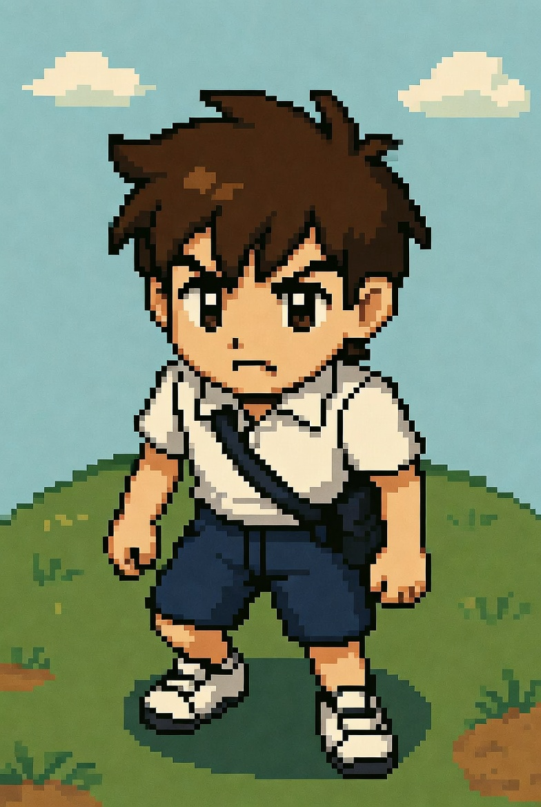

Luke é um garoto de 13 anos muito confiante e aventureiro, ele adora passar o tempo brincando com seu cachorro jack um salsicha bem esperto e bonitinho. Luke adora ciências e cada dia cria algo novo até que um dia explorando o soton de seus avós se depara com um objeto nunca visto por ele antes.Ao tentar mecher no relógio tão esquisito acaba sendo teletransportado para o passado.
